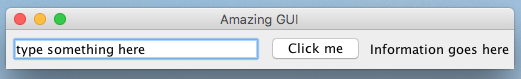

1.Name 5 JComponents used in the following GUI:

_________________________________________________
_________________________________________________
_________________________________________________
_________________________________________________
_________________________________________________
2. What would be the best type of listener you could use, to tell when…
The mouse was moved _________________________________________________
A button was clicked _________________________________________________
An image was clicked _________________________________________________
Any key was pressed _________________________________________________
3. Given the listeners that you put in the answers above, what is the name of the method that will be called when...
A letter is typed? _________________________________________________
A button is clicked?_________________________________________________
A mouse is clicked?_________________________________________________
4. Write code to add listeners to the following components:
JButton amazingButton = new JButton();
_________________________________________________
JFrame myFrame = new JFrame();
_________________________________________________